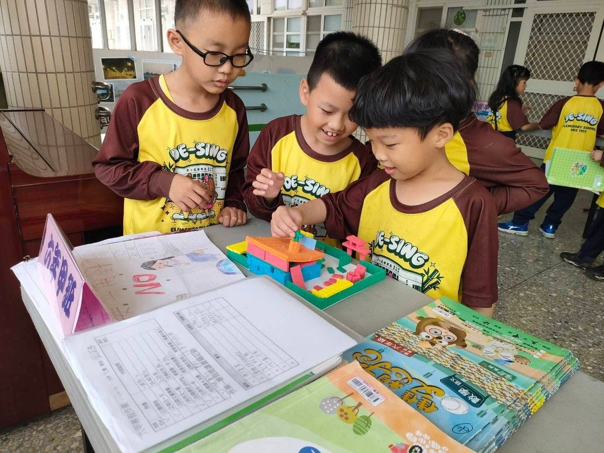
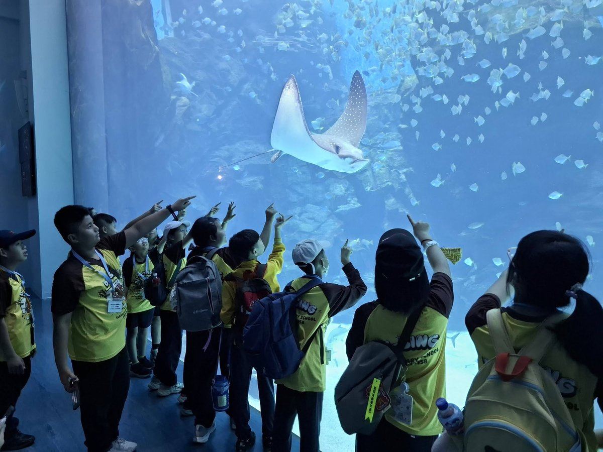
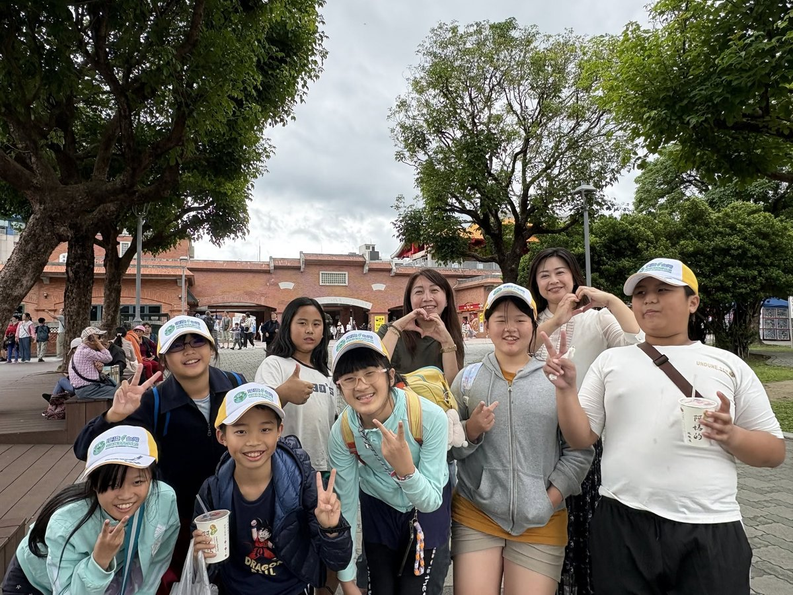
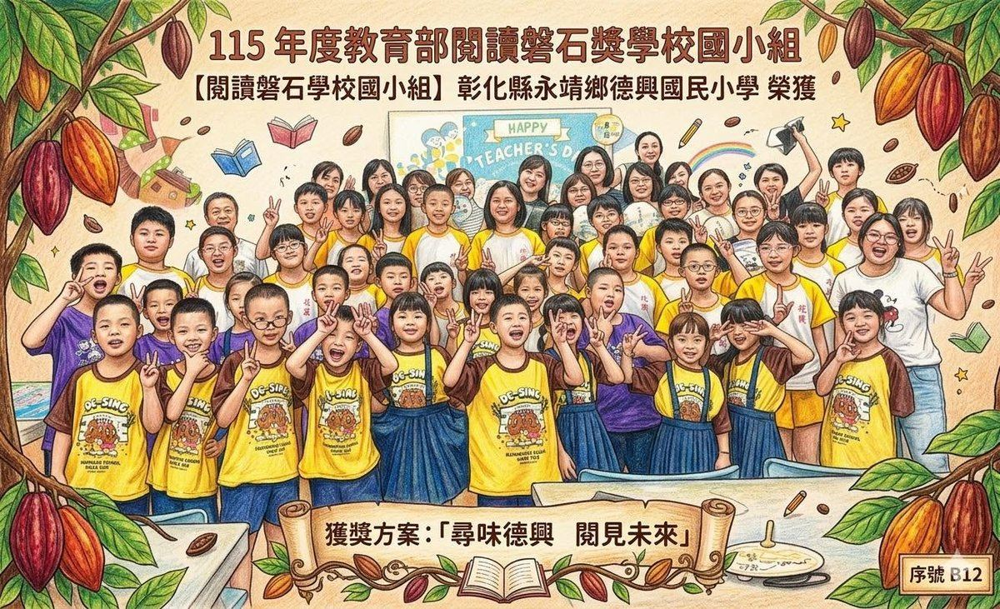
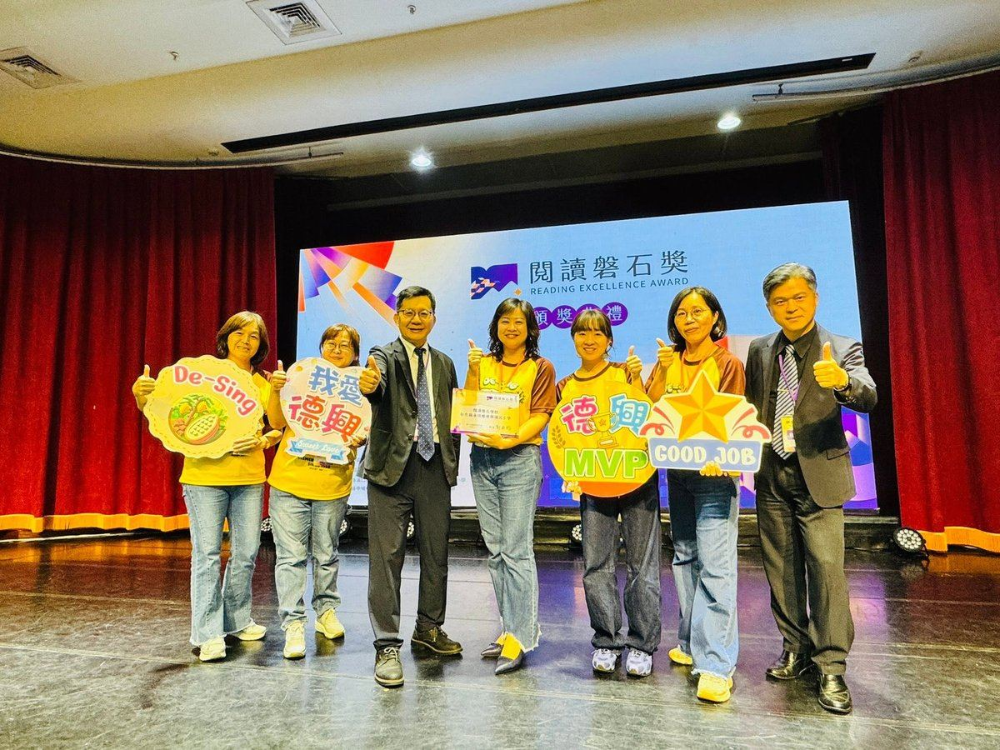
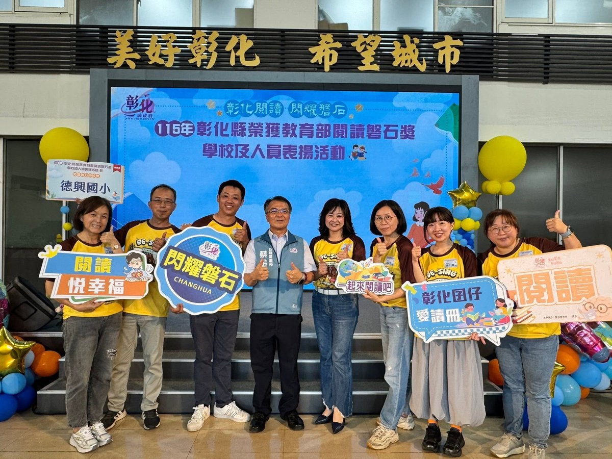

🏆
Quality & Sustainability品質永續
Total quality management for lasting organizational sustainability.
全面品質管理，提昇組織永續。
"Let every child shine in their own way, and let every talent come to light."
讓孩子各自美麗、讓天賦發光。
Principal Lin Hui-ju leads Desing Elementary, a small community school in the Hakka village of Jhucijhen — in Yongjing Township, on the south-western plain of Changhua County. Before coming to Desing, she served as a curriculum supervisor at the Changhua County Education Department, and as a teacher, homeroom teacher, and director at schools across Changhua and Taoyuan.
Jhucijhen is a village where "one village, one school, one temple" are all one family. What the school lacks in size, it makes up for in heart: a recorder club with 20-plus years of award-winning history, a student-run greenhouse farm, and visiting teachers from abroad who bring English to life — small in number, wide in heart.
林惠如校長帶領的德興國小，是一所座落於永靖鄉竹子村客家庄的小型社區學校。到德興之前，她曾任彰化縣政府教育處課程督學，並在彰化、桃園多所學校擔任教師、導師與主任。
竹子村是個「一村、一校、一廟」都像一家人的地方。德興的規模雖小，卻很有內涵：成立二十多年、屢屢獲獎的直笛社，學生親手照顧的溫室農場，還有巡迴到校、把英語變得活起來的外籍老師——人數雖少，心卻很寬。
Years of study and service across Changhua and Taoyuan, from the classroom to the county education office.
從教室到縣府教育處，林校長在彰化與桃園累積了多年的求學與服務歷程。



Principal Lin's six management strategies are not a banner on the wall. They are the daily rhythm of a small school where every child is seen.
林校長的六大校務經營策略，不只是牆上的口號，而是一所小校裡，每個孩子都被看見的日常節奏。
A small school can still do remarkable things when every child matters and no talent goes unnoticed.
一所小學，當每個孩子都被看見、每份天分都不被遺漏，依然能成就不凡。



Every child in Jhucijhen — whether a recorder player, a young farmer tending the greenhouse, or a first-time English speaker — deserves to be seen for what makes them shine. 竹子村的每個孩子——無論是吹直笛的、照顧溫室的小農夫，還是第一次開口說英語的孩子——都值得被看見自己閃閃發光的那一面。
Educators, parents, and friends from Taiwan and abroad are warmly welcome to visit Desing. We especially welcome colleagues interested in Hakka village culture, greenhouse farm learning, and what bilingual really means in a small community school.
歡迎國內外教育工作者、家長與朋友蒞校交流。我們尤其歡迎對「客家庄文化」、「溫室農場學習」以及「雙語教育在小型社區學校的真實樣貌」有興趣的同道中人。
After her assembly at Desing Elementary, Dom Jones sat down with the principal to ask the question behind the work: why did you choose to lead a school — and what do English and international education mean for the children here?
Dom Jones 在德興國小的晨會之後，與校長坐下來對談：您為什麼選擇走上校長這條路？英語教育與國際教育，對這裡的孩子又意味著什麼？